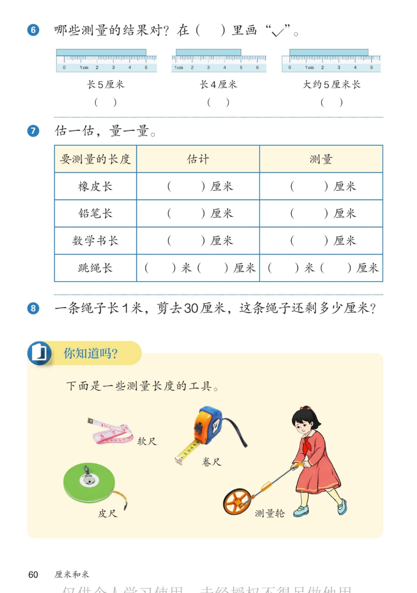

🔊 四、厘米和米 · 课本第 60 页 · 练一练 6~8 与你知道吗
人教版《数学》二年级上册 · 有声图文带读 · 先想后看解析 · 判断量法 · 估与量 · 测量工具
题数
6
认知
2
强化
3
拓展
1
本页重点
测量结果判断 · 估一估量一量 · 1米减30厘米 · 测量工具
🎧 分两步学：
① 解析教材图片
——纯声音读图，读到哪一块哪一块闪动提示；关键处先倒计时让你思考，再在图片下方给出解析并朗读。
② 分层提问练习
——六道分层题（认知 / 强化 / 拓展），先思考再展开解析、朗读参考答案；这一步不再回到图片。
也可以随时点任意一句话、图上任意一块单独听；点课本文字卡还会展开答案。
教材图片（点块听读，读到哪块哪块闪）

📖 人教版《数学》二年级上册 · 课本第 60 页 · 图片仅供个人学习，版权归人民教育出版社所有
🤔 想一想（点我可跳过）
课本的文字（点句子：听读 + 看答案）
第 6 题
测量的结果对不对？
看答案 ▾
图 1：
0 到 4
应是 4 厘米，写 5 厘米
✗
；
图 2：
1 到 5
，5−1＝4，写 4 厘米
✓
；
图 3：
0 到 5
，大约 5 厘米长
✓
。
第 7 题
先估一估，再量一量
看答案 ▾
示例：橡皮长：估
3
厘米，量
4
厘米（以实物为准）；
铅笔长：估
15
厘米，量出来记准确数；
数学书长：约
26
厘米；跳绳长：约
2 米
（各人跳绳不同）；
💡 估和量都要填，差距小说明估得好
第 8 题
剪绳子问题
看答案 ▾
1 米＝
100 厘米
；
100−30＝
70（厘米）
；
答：这条绳子还剩
70 厘米
。
你知道吗
测量长度的工具
看答案 ▾
软尺
：量腰围、头围，能弯能曲；
卷尺
：量家具、量房间，一拉老长；
皮尺
：量土地、裁缝量衣；
测量轮
：滚着走，量操场跑道那样的长路。
分层提问练习（先想后看解析）
✅
认知
第 6 题：哪些测量的结果对？
看解析
🤔 想一想
解析：
图 2
✓
、图 3
✓
，图 1
✗
；
判断方法：看
起点刻度
和
终点刻度
，相减算长度。
🧰
认知
"你知道吗"里介绍了哪些测量工具？
看解析
🤔 想一想
解析：
软尺、卷尺、皮尺、测量轮
四种。
不同工具量不同东西：软尺量身体，卷尺量家具，测量轮量长路。
❌
强化
第 6 题图 1 为什么错？错在哪里？
看解析
🤔 想一想
解析：
物体从 0 到 4，应是
4 厘米
；
写 5 厘米是把
格子数错
了，要多一格才是 5。
💡 长度=终点刻度−起点刻度，别只看终点
✂️
强化
第 8 题：绳子剪去 30 厘米后还剩多少？
看解析
🤔 想一想
解析：
1 米＝
100 厘米
（先统一单位）；
100−30＝
70（厘米）
。
💡 单位不同先换算，再加减
👀
强化
第 7 题"估一估、量一量"怎么做才好？
看解析
🤔 想一想
解析：
先估
：眼看手比，说出大约几厘米；
再量
：对准 0、贴紧放平，读出准确数。
💡 估和量对比，误差越来越小就是进步
🌈
拓展
量身腰、教室、跑道，各选什么工具？
看解析
🤔 想一想
解析：
腰围
软尺
（能弯曲贴身）；教室
卷尺
；
跑道很长，用
测量轮
滚着量最快。
🌈 好工具让测量事半功倍
① 解析教材图片
② 分层提问练习
⏹ 停止
纯声音 + 高亮跟随 · 想好才出解析
← 返回导航